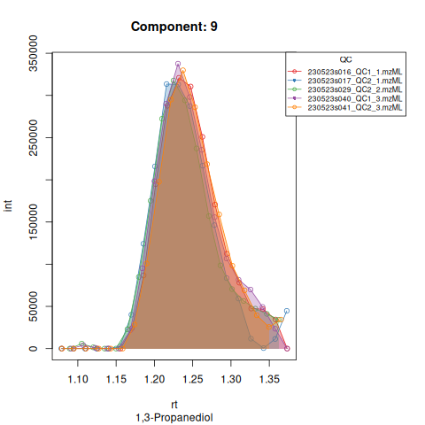

Quick start for targeted peak integration of LC-MS data using TARDIS
Pablo Vangeenderhuysen
2025-10-23
quick_start.RmdIntroduction
TARDIS offers an easy and straightforward way to
automatically calculate area under the peak, max intensity and various
quality metrics for targeted chemical compounds in LC-MS data. It makes
use of an established retention time correction algorithm from the
xcms package and loads MS data as Spectra
objects so it’s easily integrated with other tools of the
Rformassspectrometry initiative.
See README for installation instructions.
This quick start guide will briefly demonstrate the main
functionalities of TARDIS using the command line interface.
For details on the GUI we refer to the gui_tutorial
vignette. For more information we refer to the publication : https://pubs.acs.org/doi/10.1021/acs.analchem.5c00567.
Loading data
The first step is creating a data.frame that describes
the chemical compounds. Following columns at least need to be present
for each compound:
- A compound ID, a unique identifier
- A compound Name
- Theoretical or measured m/z
- Expected RT (in minutes)
- A column that indicates the polarity of the formed ion for that compound
Extra columns can be included in the file, but will be ignored by
TARDIS unless otherwise indicated.
An input file (either .xlsx or .csv) can be converted to a correct
data.frame using the createTargetList() function. Input
parameters needed are: the path to the file, the patterns for positive
and negative ionization, the polarity of interest, the columnn that
contains the ionization mode and the other columns of interest.
| id | name | mz | ion | rt |
|---|---|---|---|---|
| 49 | Valeric acid | 103.07536 | + | 8.4 |
| 76 | Malic acid | 133.01424 | - | 1.21 |
| 82 | Pyruvic acid | 87.008769999999998 | - | 1.48 |
| 86 | (R)-(+)-Methylsuccinic acid | 133.04954000000001 | + | 4.2 |
| 89 | Azelaic acid | 187.09757999999999 | - | 8.77 |
| 91 | Sebacic acid | 201.11322999999999 | - | 9 |
The target data.frame is created using
createTargetList(). For more info on how to use the
function, check the help page: ?createTargetList
library(TARDIS)
#> Warning: replacing previous import 'S4Arrays::makeNindexFromArrayViewport' by
#> 'DelayedArray::makeNindexFromArrayViewport' when loading 'SummarizedExperiment'
targets <- createTargetList("vignette_data/targets.xlsx",
pos_pattern = "+",
neg_pattern = "-",
polarity = "positive",
ion_column = "ion",
columns_of_interest = c("id", "name", "mz", "rt"))
kableExtra::kable(head(targets))| ID | NAME | m/z | tr | |
|---|---|---|---|---|
| 1 | 49 | Valeric acid | 103.07536 | 504.0 |
| 4 | 86 | (R)-(+)-Methylsuccinic acid | 133.04954 | 252.0 |
| 8 | 98 | Urocanic acid | 139.05020 | 79.8 |
| 9 | 169 | L-Alanine | 90.05496 | 51.6 |
| 10 | 170 | L-Valine | 118.08626 | 78.0 |
| 11 | 171 | L-Leucine | 132.10191 | 132.0 |
The files in which the targets need to be detected are:
list.files(path = "vignette_data/mzML/")
#> [1] "230523s016_QC1_1.mzML" "230523s017_QC2_1.mzML" "230523s018_A081.mzML"
#> [4] "230523s020_A254.mzML" "230523s021_A158.mzML" "230523s022_A521.mzML"
#> [7] "230523s028_QC1_2.mzML" "230523s029_QC2_2.mzML" "230523s030_A043.mzML"
#> [10] "230523s031_A551.mzML" "230523s032_A566.mzML" "230523s033_A513.mzML"
#> [13] "230523s040_QC1_3.mzML" "230523s041_QC2_3.mzML"The files are ordered in the folder by injection index, in this case, we have a total of 14 runs:two QC injections, followed by four sample injections, two QC injections, four sample injections and two QC injections.
Alternatively, instead of using file paths as input for TARDIS, the
user can also use an MsExperiment object. Here it is
necessary to include at least sample type in the sampleData to
distinguish QC from sample runs.
IMPORTANT! The sampleData column has to be named
type.
library(MsExperiment)
files <- list.files(path = "vignette_data/mzML/",full.names = TRUE)
ms_data <- readMsExperiment(files,
backend = Spectra::MsBackendMzR())
ms_data
#> Object of class MsExperiment
#> Spectra: MS1 (15625)
#> Experiment data: 14 sample(s)
#> Sample data links:
#> - spectra: 14 sample(s) to 15625 element(s).
sampleData(ms_data)$type <- c("QC",
"QC",
"sample",
"sample",
"sample",
"sample",
"QC",
"QC",
"sample",
"sample",
"sample",
"sample",
"QC",
"QC")Data with multiple scan windows
IMPORTANT! if your data contains multiple (overlapping) m/z scan windows, it is nescessary to analyze these seperatly through the “mass_range” argument. If not, you will notice that peaks will have a sawtooth profile, because of the filtering of empty spectra within TARDIS.
knitr::include_graphics("vignette_data/plots/sawtooth.png")Screening mode
First, we perform a screening step to check if our targets are visible within our m/z and RT windows.
I limited the selection to 10 targets: 5 internal standards and 5 endogenous metabolites.
We can run screening mode using the argument
screening_mode = TRUE in the tardis_peaks function.
For more details on the inputs of the function, please read the help
page ?tardisPeaks
results <- tardisPeaks(file_path = "vignette_data/mzML/",
dbData = targets,
mass_range = NULL,
polarity = "positive",
output_directory = "vignette_data/output/screening/",
batch_positions = list(c(1,14)),
QC_pattern = "QC",
int_std_id = c("1576","1577","1578","1583","331"),
screening_mode = TRUE)
#> Performing retention time correction using 5 peak groups.Or, as mentioned, the MsExperiment object can be used as input instead.
results <- tardisPeaks( lcmsData = ms_data,
dbData = targets,
mass_range = NULL,
polarity = "positive",
output_directory = "vignette_data/output/screening/",
batch_positions = list(c(1,14)),
QC_pattern = "QC",
int_std_id = c("1576","1577","1578","1583","331"),
screening_mode = TRUE)
#> Performing retention time correction using 5 peak groups.
#> Warning in .adjustRtime_peakGroupsMatrix(rt_raw, peakGroupsMatrix(param), :
#> Span too small for 'loess' and the available number of peak groups, resetting
#> to 0.8The resulting EICs are saved in the output folder and can be inspected:
knitr::include_graphics(c("vignette_data/output/screening/Diagnostic_QCs_Batch_1/Component_7.png",
"vignette_data/output/screening/Diagnostic_QCs_Batch_1/Component_9.png",
"vignette_data/output/screening/Diagnostic_QCs_Batch_1/Component_131.png",
"vignette_data/output/screening/Diagnostic_QCs_Batch_1/Component_179.png",
"vignette_data/output/screening/Diagnostic_QCs_Batch_1/Component_183.png",
"vignette_data/output/screening/Diagnostic_QCs_Batch_1/Component_331.png",
"vignette_data/output/screening/Diagnostic_QCs_Batch_1/Component_1576.png",
"vignette_data/output/screening/Diagnostic_QCs_Batch_1/Component_1577.png",
"vignette_data/output/screening/Diagnostic_QCs_Batch_1/Component_1578.png",
"vignette_data/output/screening/Diagnostic_QCs_Batch_1/Component_1583.png"
))Based on the EICs we can see that detection and integration were successful, however,targets 1577 and 1583 are eluting towards the edge of our retention time windows, so we’ll adjust their expected retention times to the ones were we see the peaks eluting.
Peak detection
Now we can perform peak detection in all our runs by setting
screening_mode = FALSE.
results <- tardisPeaks(lcmsData = ms_data,
dbData = targets,
mass_range = NULL,
polarity = "positive",
output_directory = "vignette_data/output/",
batch_positions = list(c(1,14)),
QC_pattern = "QC",
int_std_id = c("1576","1577","1578","1583","331"),
screening_mode = FALSE)
#> Performing retention time correction using 5 peak groups.
#> Aligning sample number 3 against subset ... OK
#> Aligning sample number 4 against subset ... OK
#> Aligning sample number 5 against subset ... OK
#> Aligning sample number 6 against subset ... OK
#> Aligning sample number 9 against subset ... OK
#> Aligning sample number 10 against subset ... OK
#> Aligning sample number 11 against subset ... OK
#> Aligning sample number 12 against subset ... OKResults
The resulting EICs are again saved in the output folder and can be inspected:
knitr::include_graphics(c("vignette_data/output/Diagnostic_QCs_Batch_1/Component_7.png",
"vignette_data/output/Diagnostic_QCs_Batch_1/Component_9.png",
"vignette_data/output/Diagnostic_QCs_Batch_1/Component_131.png",
"vignette_data/output/Diagnostic_QCs_Batch_1/Component_179.png",
"vignette_data/output/Diagnostic_QCs_Batch_1/Component_183.png",
"vignette_data/output/Diagnostic_QCs_Batch_1/Component_331.png",
"vignette_data/output/Diagnostic_QCs_Batch_1/Component_1576.png",
"vignette_data/output/Diagnostic_QCs_Batch_1/Component_1577.png",
"vignette_data/output/Diagnostic_QCs_Batch_1/Component_1578.png",
"vignette_data/output/Diagnostic_QCs_Batch_1/Component_1583.png"
))

The results object is a list that contains
a data.frame with the AUC of each target in each run and a
tibble that contains a feature table with the average
metrics for each target in the QC runs.
| Component | 230523s016_QC1_1.mzML | 230523s017_QC2_1.mzML | 230523s018_A081.mzML | 230523s020_A254.mzML | 230523s021_A158.mzML | 230523s022_A521.mzML | 230523s028_QC1_2.mzML | 230523s029_QC2_2.mzML | 230523s030_A043.mzML | 230523s031_A551.mzML | 230523s032_A566.mzML | 230523s033_A513.mzML | 230523s040_QC1_3.mzML | 230523s041_QC2_3.mzML |
|---|---|---|---|---|---|---|---|---|---|---|---|---|---|---|
| 131 | 24020292 | 28183111 | 12404549 | 28647263 | 19778739 | 15973261 | 29269960 | 27130309 | 19605965 | 65198737 | 6319715 | 5151537 | 28820005 | 28614613 |
| 1576 | 8952766 | 9009793 | 10069135 | 8740816 | 9832668 | 10029678 | 8809010 | 8410986 | 8384713 | 10408981 | 9276249 | 9122995 | 9147050 | 9265387 |
| 1577 | 31972288 | 31621393 | 33184503 | 29541077 | 36105805 | 33162748 | 31866205 | 31143734 | 28043811 | 37897281 | 28021253 | 30422008 | 31651442 | 29564982 |
| 1578 | 23234773 | 24457534 | 34549456 | 30473747 | 26068231 | 28313704 | 22667409 | 23067483 | 27788464 | 34880113 | 28988999 | 28398306 | 23927010 | 22168021 |
| 1583 | 115889438 | 112737670 | 132212474 | 125748268 | 122671293 | 130028353 | 108772009 | 112322858 | 113154298 | 129791199 | 121465742 | 79729532 | 104780064 | 109711464 |
| 179 | 36945872 | 38625629 | 25433620 | 9928833 | 26196397 | 25567778 | 38382311 | 35189159 | 25537917 | 22157571 | 14137787 | 16480727 | 37429063 | 37541661 |
| Component | AUC | MaxInt | SNR | peak_cor | foundRT | pop | ID | NAME | m.z | tr | mean | na.rm | trold |
|---|---|---|---|---|---|---|---|---|---|---|---|---|---|
| 131 | 27673048 | 7013989 | 8.549146 | 0.9426621 | 52.85621 | 13.000000 | 131 | D-(+)-Glucose | 203.0526 | 52.85621 | 52.85621 | TRUE | 54.6 |
| 1576 | 8932499 | 2052563 | 9.639474 | 0.9591649 | 111.99854 | 14.166667 | 1576 | L-Tyrosine-d2 | 184.0937 | 111.99854 | 111.99854 | TRUE | 109.2 |
| 1577 | 31303341 | 9601707 | 5.337986 | 0.9473591 | 529.66261 | 7.666667 | 1577 | Indole-3-acetic acid-d5 | 181.1020 | 529.66261 | 529.66261 | TRUE | 529.2 |
| 1578 | 23253705 | 6981963 | 8.124268 | 0.9759577 | 89.14154 | 8.333333 | 1578 | Dopamine-d4 | 158.1111 | 89.14154 | 89.14154 | TRUE | 88.2 |
| 1583 | 110702250 | 30890172 | 11.890113 | 0.9755802 | 240.41981 | 10.666667 | 1583 | L-Phenylalanine-d2 | 168.0988 | 240.41981 | 240.41981 | TRUE | 240.0 |
| 179 | 37352282 | 8723543 | 8.876178 | 0.9572953 | 53.16109 | 14.500000 | 179 | L-Glutamic acid | 148.0604 | 53.16109 | 53.16109 | TRUE | 52.8 |
Other results include tables with the other metrics (Max. Int., SNR, peak_cor and points over the peak) and are saved into the output folder.
maxint <- read.csv("vignette_data/output/int_table.csv",check.names = FALSE)
SNR <- read.csv("vignette_data/output/snr_table.csv",check.names = FALSE)
peak_cor <- read.csv("vignette_data/output/peakcor_table.csv",check.names = FALSE)
pop <- read.csv("vignette_data/output/pop_table.csv",check.names = FALSE)| Component | 230523s016_QC1_1.mzML | 230523s017_QC2_1.mzML | 230523s018_A081.mzML | 230523s020_A254.mzML | 230523s021_A158.mzML | 230523s022_A521.mzML | 230523s028_QC1_2.mzML | 230523s029_QC2_2.mzML | 230523s030_A043.mzML | 230523s031_A551.mzML | 230523s032_A566.mzML | 230523s033_A513.mzML | 230523s040_QC1_3.mzML | 230523s041_QC2_3.mzML | |
|---|---|---|---|---|---|---|---|---|---|---|---|---|---|---|---|
| 1 | 131 | 9 | 14 | 14 | 15 | 14 | 15 | 14 | 14 | 8 | 14 | 14 | 13 | 14 | 13 |
| 2 | 1576 | 14 | 14 | 13 | 13 | 12 | 13 | 14 | 15 | 14 | 13 | 13 | 18 | 14 | 14 |
| 3 | 1577 | 7 | 8 | 8 | 7 | 8 | 7 | 8 | 7 | 8 | 7 | 7 | 7 | 8 | 8 |
| 4 | 1578 | 8 | 9 | 8 | 8 | 8 | 8 | 9 | 8 | 8 | 8 | 8 | 8 | 8 | 8 |
| 5 | 1583 | 9 | 9 | 11 | 14 | 9 | 11 | 10 | 10 | 11 | 10 | 10 | 9 | 14 | 12 |
| 6 | 179 | 15 | 15 | 15 | 16 | 16 | 15 | 15 | 14 | 14 | 14 | 14 | 12 | 14 | 14 |